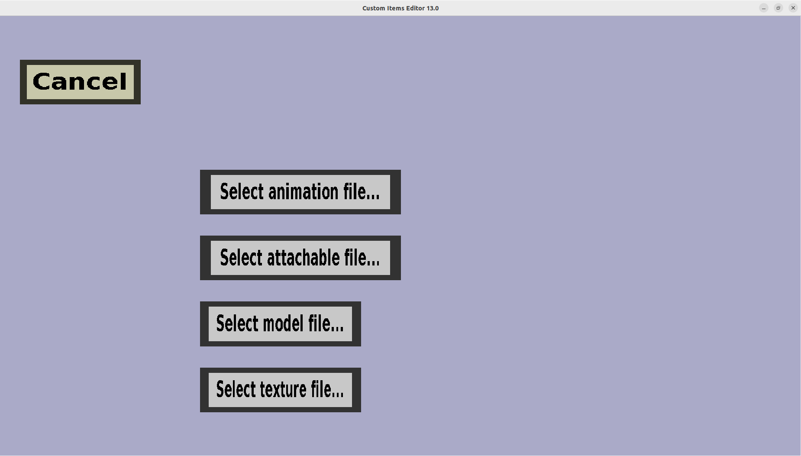

The manual Geyser model selection menu can be used to select a Bedrock edition item model for your custom item.
It should look like this:

To complete a Bedrock edition model, you need to supply 4 files:
- The animation file, which goes to the animations/minecraft/customitems directory
- The attachable file, which goes to the attachables/minecraft/customitems directory
- The model file, which goes to the models/blocks/minecraft/customitems directory
- The texture, which goes to the textures directory